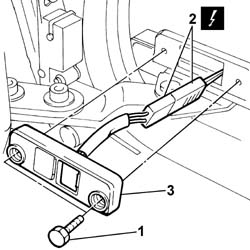

5505A21 TAILGATE HOUSING RIGHT SIDE SLIDING CONTACTS SUPPORT - R.R.
- Path
- Procedures > 55 ELECTRICAL EQUIPMENT > 5505 INSTRUMENT/GUAGE ELECTRICAL WIRING > 5505A MULTI-FUNCTION COMPONENTS > 5505A21 TAILGATE HOUSING RIGHT SIDE SLIDING CONTACTS SUPPORT - R.R.
- Kind
- repair procedure (removal / refitting; the operation number is the code)
- Applies to
- all engines; all production periods
- Interactive page
- https://sloeber94.github.io/elrnDB-fDct/en/#/244001329
Applies to: all engines; all production periods; only with equipment: Minibus and Van and Panorama and Combi
 Removing
Removing
 Refitting
Refitting- Disconnect the negative battery terminal.
1. Undo the bolts fixing the sliding contacts support.
- Release the sliding contacts support from the housing on the bodyshell.
2. Disconnect the electrical connector for the sliding contacts support.
Description | Connector | |
|---|---|---|
2 | Contact board on sliding side door | D185 |
3. Remove the sliding contacts support.

Applies to: all engines; all production periods; only with equipment: Minibus and Van and Panorama and Combi
Refitting
Removing- Connect the electrical connector for the sliding contacts support.
Description | Connector | |
|---|---|---|
- | Contact board on sliding side door | D185 |
- Secure the sliding contact support to the bodyshell tightening the fixing bolts.
- Connect the negative battery terminal.